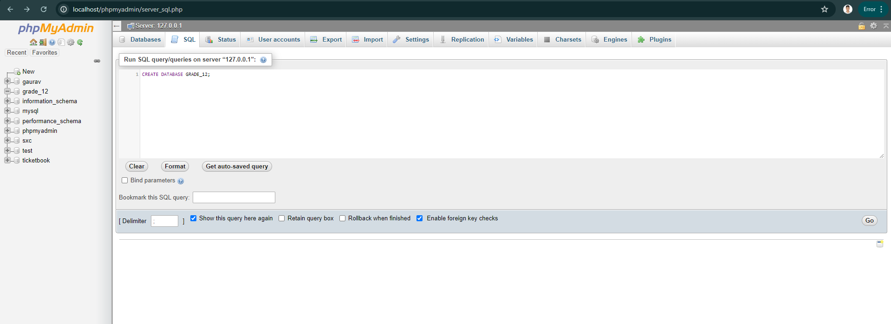
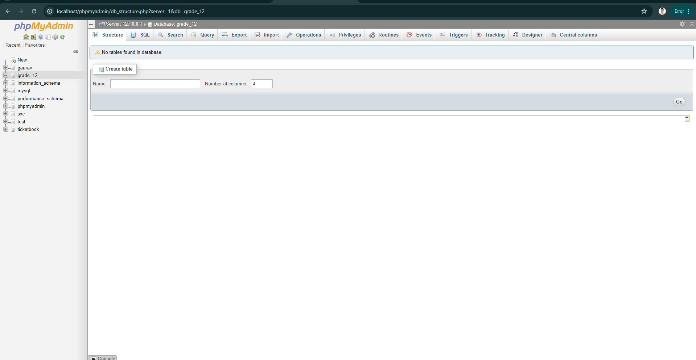
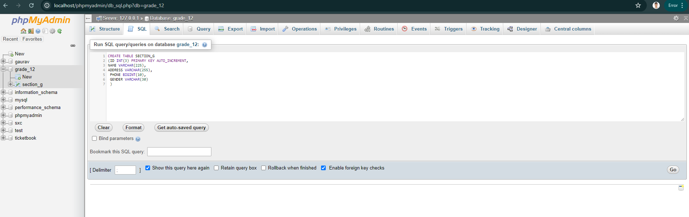
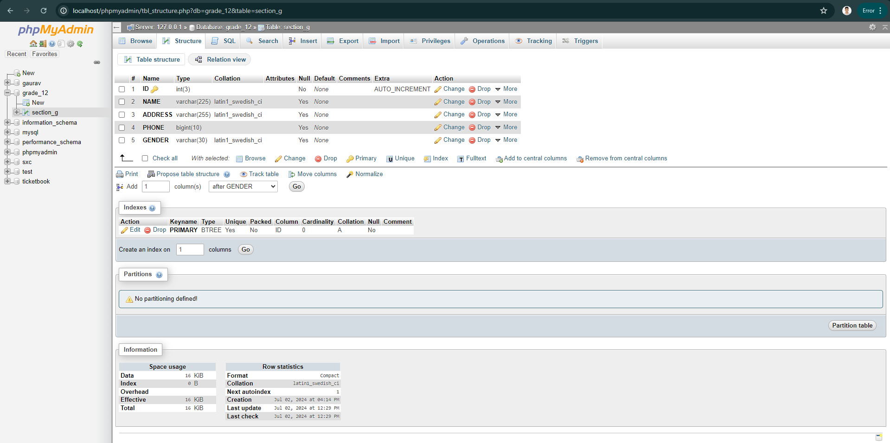
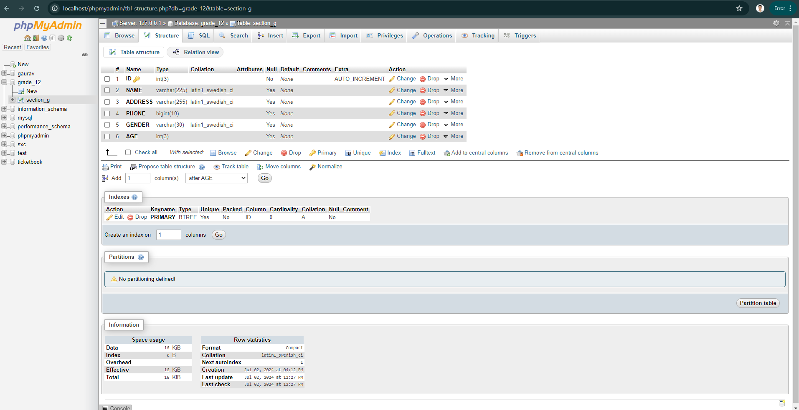
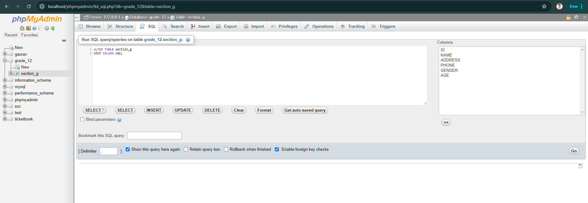

Today, we were given a task to experiment with some SQL keywords using a local host XAMPP server and phpMY Admin. To complete this task, I first downloaded and installed the XAMPP control panel software on my laptop. After launching the local host server, accessible at https://localhost/phpmyadmin, I used phpMyAdmin to run various SQL keywords to understand their functions.
Step 1: Creating a Database Named GRADE_12
Inside the Database
Step 2: Creating a Table Named Section_g
Database After Creating Tables:
Step 3: Adding a New Column Named AGE
Step 4: Dropping the AGE Column
Step 5: Dropping the Table Section_g